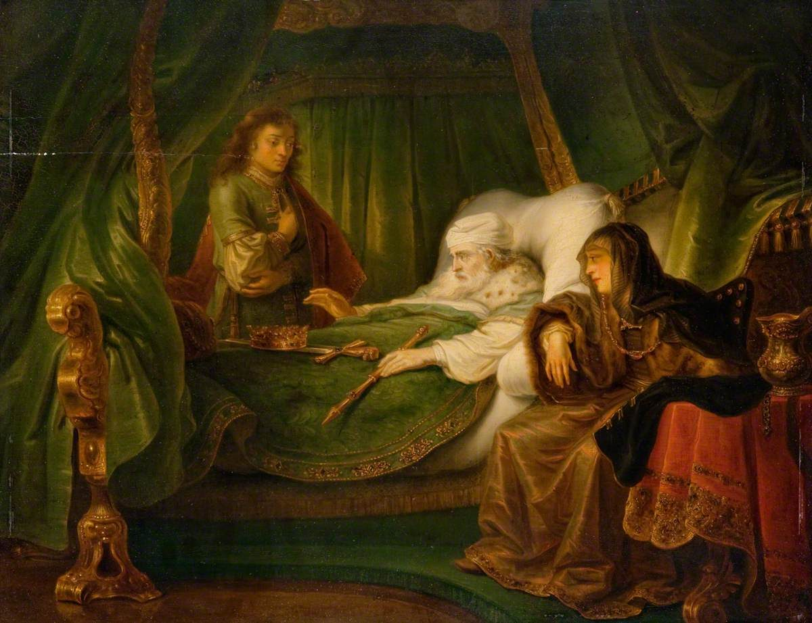

1 Kings 2 — The Mister Translation

1 Kings 2:1–9. The title is the museum’s, and it is a copy after another painter. The verses name David and Solomon (2:1) and say that David charged him; they do not mention a bed, a crown or sceptres, or a woman at the bedside.
_-_GLAHA_43456_-_Hunterian_Museum_and_Art_Gallery.jpg){kind=link}
Translator's Notes — verse by verse
The way of all the earth. “I am going the way of all the earth; be strong, and be a man”: “the way of all the earth” stands in two verses, this one and Joshua’s farewell (Joshua 23:14, now on these pages); and “and be a man”, vehayita le’ish, stands only here. The ASV has “I am going the way of all the earth: be thou strong therefore, and show thyself a man”. The NWT 1984 has “you must be strong and prove yourself to be a man”. The NIV has “So be strong, act like a man”. The Douay has “I am going the way of all flesh”, from the Latin. The TLB has “I am going where every man on earth must some day go”.
The charge of Jehovah. “And keep the charge of Jehovah your God, to walk in his ways”: “the charge of Jehovah” stands in six verses, among them the priests at the tent of meeting (Leviticus 8:35), the camp under the cloud (Numbers 9:19, 23, both now on these pages), and this one. The four words that follow are “his statutes, his commandments, his ordinances and his testimonies”: the ASV has “his statutes, and his commandments, and his ordinances, and his testimonies”, the KJV “his judgments” for the third, the NWT 1984 “his judicial decisions”, and the Douay “his ceremonies, and his precepts, and judgments”. “As it is written in the law of Moses”: “in the law of Moses”, betorat Moshe, stands in six verses, this one and five in Chronicles, Ezra and Daniel; Joshua has the longer “in the book of the law of Moses” (Joshua 8:31; 23:6, both now on these pages).
Act wisely. “That you may act wisely in all that you do and wherever you turn”: the verb is taskil, the one of “so that you may act wisely wherever you go” in Joshua 1:7 (now on these pages; see sakal). The ASV has “that thou mayest prosper in all that thou doest”. The KJV has “that thou mayest prosper in all that thou doest”. The NIV has “so that you may prosper in all you do”. The TLB has “so that you will prosper in everything you do”. The NWT 1984 has “in order that you may act prudently in everything that you do”. The Douay has “that thou mayest understand all thou dost”, from the Latin.
A promise with an “if”. “That Jehovah may establish his word which he spoke concerning me, saying: ‘If your sons keep their way, to walk before me in truth with all their heart and with all their soul’ — saying — ‘there shall not be cut off for you a man from upon the throne of Israel.’” The words “if your sons keep” are not in 2 Samuel. “If your sons keep” stands in four verses of the Hebrew Bible, this one, 1 Kings 8:25, 2 Chronicles 6:16 and Psalm 132:12 (none of the last three translated here yet), and what 2 Samuel 7:12–16 has is “I will establish his kingdom” and “your throne shall be established forever” (2 Samuel 7:12–16, now on these pages). The ASV has “there shall not fail thee (said he) a man on the throne of Israel”. The NWT 1984 has “there will not be cut off a man of yours from [sitting] upon the throne of Israel”. The NIV has “you will never fail to have a successor on the throne of Israel”. The TLB has “my dynasty will never end”.
Joab. “What he did to the two commanders of the armies of Israel, to Abner son of Ner and to Amasa son of Jether: he killed them, and put the blood of war in peace”: the two killings are 2 Samuel 3:27 and 20:10 (both now on these pages), and David says that what Joab did to them he did “to me”; at the first one David had already said “let it fall upon the head of Joab, and upon all his father’s house” (2 Samuel 3:28–29, now on these pages). The ASV has “whom he slew, and shed the blood of war in peace, and put the blood of war upon his girdle that was about his loins”. The NIV has “shedding their blood in peacetime as if in battle”. The NWT 1984 has “placed the blood of war in peacetime”. The TLB has “He pretended that it was an act of war, but it was done in a time of peace”.
The gray head, and Sheol. “Do not let his gray head go down to Sheol in peace” (verse 6) and “you shall bring his gray head down with blood to Sheol” (verse 9) use the words of Jacob about Benjamin, “you will bring down my gray hairs with sorrow to the grave” (Genesis 42:38; 44:29, 31, all now on these pages). The ASV has “his hoar head go down to Sheol in peace”, the KJV “to the grave”, the NIV “his gray head go down to the grave in peace”, the NWT 1984 “his gray hairs go down in peace to Sheʹol”, and the Douay “his hoary head go down to hell in peace”. “In peace” and “with blood” are the two ends of the sentence.
Barzillai’s sons. “And to the sons of Barzillai the Gileadite show kindness, and let them be among those who eat at your table; for so they drew near to me when I fled from Absalom your brother”: Barzillai brought David supplies at Mahanaim (2 Samuel 17:27) and sent Chimham across in his place (19:39, both now on these pages), and Mephibosheth was told “you yourself shall eat bread at my table continually” (9:7). The ASV has “let them be of those that eat at thy table; for so they came to me when I fled from Absalom thy brother”. The NWT 1984 has “exercise loving-kindness” and “that was the way they drew near to me”. The NIV has “They stood by me when I fled from your brother Absalom”. The TLB has “Make them permanent guests of the king”.
Shimei. “And it was he who cursed me with a grievous curse”: “grievous”, nimretset, stands only here. The ASV has “a grievous curse”, the Geneva “an horrible curse”, the NWT 1984 “a painful malediction” and the NIV “called down bitter curses on me”. David says he swore “I will not put you to death with the sword”; what the narrator has David say to Shimei at the Jordan is “You shall not die” (2 Samuel 19:24, now on these pages). “Do not leave him unpunished” is al-tenaqqehu, and the form stands only here; the verb is the one of “who will by no means clear the guilty” (Exodus 34:7, now on these pages). The ASV has “hold him not guiltless”, the NIV “do not consider him innocent”, the NWT 1984 “do not leave him unpunished”, and the Geneva “thou shalt not count him innocent”.
Lay down with his fathers. “And David lay down with his fathers, and was buried in the city of David”: the verb is shakhav, “lay down”, the one in the promise “when your days are fulfilled, and you sleep with your fathers” (2 Samuel 7:12, now on these pages). The ASV has “And David slept with his fathers, and was buried in the city of David”. The KJV has “So David slept with his fathers, and was buried in the city of David”. The Douay has “So David slept with his fathers, and was buried in the city of David”. The NIV has “David rested with his ancestors”. The NWT 1984 has “David lay down with his forefathers”. The TLB has “David died and was buried in Jerusalem”.
Forty years. “In Hebron he reigned seven years, and in Jerusalem he reigned thirty-three years”: seven and thirty-three are forty. The earlier book has “seven years and six months” in Hebron and “thirty and three years” in Jerusalem (2 Samuel 5:5, now on these pages), and 1 Chronicles 29:27 has the round numbers of this verse. All seven versions on the shelf give “seven years” here; this page does not reconcile the two verses.
His kingdom was established. “And his kingdom was established greatly”: the verb is kun, and it comes back in Solomon’s “who has established me” (verse 24), in “the throne of David shall be established before Jehovah forever” (verse 45), and in the last sentence of the chapter, “the kingdom was established in the hand of Solomon” (verse 46); it is the verb of Jehovah’s “I will establish his kingdom” and “your throne shall be established forever” (2 Samuel 7:12, 16, now on these pages). The ASV has “established greatly”. The KJV has “established greatly”. The NIV has “his rule was firmly established”. The NWT 1984 has “gradually his kingship became very firmly established”. The Douay has “strengthened exceedingly”. The TLB has “his kingdom prospered”.
Peace, and Solomon. The word shalom, “peace”, runs through the chapter: Joab put the blood of war “in peace” (verse 5), his gray head is not to go down “in peace” (verse 6), Adonijah comes “in peace” (verse 13), and David’s house shall have “peace forever from Jehovah” (verse 33). The king’s name, Shelomoh, is from the same root, and Chronicles says so: “his name shall be Solomon, and I will give peace and quietness unto Israel in his days” (1 Chronicles 22:9).
“Do you come in peace?” “And Adonijah son of Haggith came to Bathsheba the mother of Solomon; and she said: ‘Do you come in peace?’ And he said: ‘In peace.’” Adonijah is the son of Haggith of David’s list of sons (2 Samuel 3:4) who had said “I will be king” (1 Kings 1:5, both now on these pages). He goes to the mother, not to the king, and asks for “a word”.
The kingdom was mine. “You know that the kingdom was mine, and that all Israel had set their faces on me to reign; but the kingdom turned about and became my brother’s, for it was his from Jehovah.” The ASV has “howbeit the kingdom is turned about, and is become my brother’s; for it was his from Jehovah”. The NWT 1984 has “the kingship turned and came to be my brother’s, for it was from Jehovah that it became his”. The NIV has “But things changed, and the kingdom has gone to my brother; for it has come to him from the Lord”. The TLB has “that is the way the Lord wanted it”. The Douay has “it was appointed him by the Lord”.
Do not turn back my face. The idiom is hashiv panim, “to turn back a face”, and it is used four times in three verses: “do not turn back my face” (verse 16), “he will not turn back your face” (verse 17), and Bathsheba’s and Solomon’s “do not turn back my face” and “I will not turn back your face” (verse 20); the verse 16 form, “do not turn back my face”, stands only there, and “I will not turn back your face” stands only in verse 20. The NWT 1984 keeps the face: “Do not turn my face away” and “I shall not turn your face away”. The Douay has “turn not away my face”. The ASV has “deny me not” and “say thee nay”. The NIV has “Do not refuse me”. The TLB has “please don’t turn me down”.
Abishag. “That he give me Abishag the Shunammite as a wife”: she is the young woman who “became the king’s attendant and served him, but the king did not know her” (1 Kings 1:4, now on these pages). The ASV has “that he give me Abishag the Shunammite to wife”. The NWT 1984 has “that he should give me Abʹishag the Shuʹnammite as a wife”. The NIV has “to give me Abishag the Shunammite as my wife”. Bathsheba’s answer is “Good; I will speak for you to the king”, and the page does not say what she understood by it.
The king bows. “And the king rose to meet her and bowed down to her, and sat on his throne, and had a throne set for the king’s mother; and she sat at his right hand.” In chapter 1 she was the one who “bowed low and did obeisance to the king” (1 Kings 1:16, now on these pages), with the same verb. The ASV has “caused a throne to be set for the king’s mother; and she sat on his right hand”. The NIV has “the king stood up to meet her, bowed down to her and sat down on his throne”. The NWT 1984 has “had a throne set for the mother of the king, that she might sit at his right”. The TLB has “bowed low to her”.
“Ask for him the kingdom also.” “And why are you asking Abishag the Shunammite for Adonijah? Ask for him the kingdom also — for he is my elder brother — for him, and for Abiathar the priest, and for Joab son of Zeruiah.” The verse gives Solomon’s reading and not the grounds for it. Elsewhere in the book a king’s woman taken by another man is read as a claim: Abner and Rizpah (2 Samuel 3:7–8) and Absalom and his father’s concubines (16:22, both now on these pages). Joab and Abiathar are the two who “gave their help, following Adonijah” (1 Kings 1:7). The ASV has “ask for him the kingdom also; for he is mine elder brother; even for him, and for Abiathar the priest, and for Joab the son of Zeruiah”. The Geneva has “and hath for him both Abiathar the Priest, and Joab”. The NIV has “You might as well request the kingdom for him”. The TLB has “Are you crazy?”.
The oath. “So may God do to me, and so may he add, if Adonijah has not spoken this word against his own life”: the oath in these words stands in two verses, this one and David’s oath to make Amasa commander (2 Samuel 19:14, now on these pages). The ASV has “God do so to me, and more also, if Adonijah hath not spoken this word against his own life”. The NWT 1984 has “So may God do to me, and so may he add to it, if it was not against his own soul that Adonijah spoke this thing”. The NIV has “May God deal with me, be it ever so severely, if Adonijah does not pay with his life for this request!”. The TLB has “May God strike me dead if Adonijah does not die this very day”.
“Made me a house.” “And now, as Jehovah lives, who has established me and seated me on the throne of David my father, and who has made me a house, as he spoke: today Adonijah shall be put to death”: “made me a house” is the promise of “Jehovah will make you a house” (2 Samuel 7:11, now on these pages), and “seated me” is written veyoshivini and read vayyoshivani; the page prints the reading. The ASV has “who hath made me a house, as he promised, surely Adonijah shall be put to death this day”. The NIV has “has founded a dynasty for me as he promised”. The NWT 1984 has “who made a house for me just as he has spoken”. Verse 25 is “and he struck him down, and he died”: the ASV has “he fell upon him, so that he died”, the NWT 1984 “he proceeded to fall upon him”, the NIV “struck down Adonijah”, and the TLB “killed him with a sword”. Solomon’s earlier word to him had a condition: “if he proves a worthy man, not one hair of his shall fall to the earth; but if evil is found in him, he shall die” (1 Kings 1:52, now on these pages).
“A man of death.” “Go to Anathoth, to your fields; for you are a man of death; but on this day I will not put you to death”: “a man of death”, ish mavet, stands only here, and it is the “son of death” of David’s verdict on the rich man (2 Samuel 12:5, now on these pages). The ASV, the KJV, the Geneva and the Douay all have “thou art worthy of death”. The NIV has “You deserve to die”. The NWT 1984 has “For you are deserving of death”. The TLB has “You should be killed, too”. Rahlfs’ Greek has anēr thanatou, “a man of death”.
The ark, and the affliction. “Because you carried the ark of the Lord Jehovah before David my father, and because you were afflicted in all in which my father was afflicted”: “the ark of the Lord Jehovah” stands only here; Rahlfs’ Greek has “the ark of the covenant of the Lord”. Abiathar “went up” with the ark when David left Jerusalem, and carried it back with Zadok (2 Samuel 15:24, 29), and he was the one son of the priests of Nob who escaped to David (1 Samuel 22:20, all now on these pages). The ASV has “thou barest the ark of the Lord Jehovah before David my father, and because thou wast afflicted in all wherein my father was afflicted”. The NIV has “shared all my father’s hardships”. The Geneva has “thou hast suffered in all, wherein my father hath been afflicted”. The TLB has “you suffered right along with him in all of his troubles”.
The house of Eli. “And Solomon drove Abiathar out from being priest to Jehovah, to fulfill the word of Jehovah which he spoke concerning the house of Eli in Shiloh”: the word is the one the man of God brought to Eli and Jehovah’s promise of “a faithful priest” (1 Samuel 2:35, now on these pages); the reference works place Abiathar in Eli’s line through Ahitub (reported here, not decided). The ASV has “Solomon thrust out Abiathar from being priest unto Jehovah, that he might fulfil the word of Jehovah, which he spake concerning the house of Eli in Shiloh”. The KJV has “Solomon thrust out Abiathar from being priest unto the LORD”. The NIV has “Solomon removed Abiathar from the priesthood of the Lord”. The NWT 1984 has “drove out Abiathar from serving as a priest of Jehovah”. The TLB has “forced Abiathar to give up his position”.
Anathoth. “Go to Anathoth, to your fields”: Anathoth is the town of “the priests that were in Anathoth in the land of Benjamin” (Jeremiah 1:1, now on these pages); that Jeremiah’s family came from Abiathar’s is a link the reference works make, and the text does not. The sentence is the whole of Abiathar’s sentence: he is not put to death, he is not heard of again in this chapter, and in verse 35 “Zadok the priest the king put in the place of Abiathar”.
The tent and the horns. “And Joab fled to the Tent of Jehovah, and took hold of the horns of the altar”: Adonijah had done the same (1 Kings 1:50), and Zadok had taken the horn of oil “from the tent” (1:39, both now on these pages). The law is “if a man come presumptuously upon his neighbour, to slay him with guile; thou shalt take him from Mine altar, that he may die” (Exodus 21:14, now on these pages). The ASV has “the Tent of Jehovah”, and so have the NIV (“the tent of the Lord”) and the NWT 1984 (“the tent of Jehovah”); the KJV and the Geneva have “the tabernacle of the LORD”.
Turned after Adonijah, not after Absalom. “For Joab had turned after Adonijah, though after Absalom he had not turned.” The ASV has “though he turned not after Absalom”. The NWT 1984 has “although Absalom he had not inclined to follow”. The NIV has “who had conspired with Adonijah though not with Absalom”. The TLB has “Joab had joined Adonijah’s revolt, though not Absalom’s”. The Douay has “had not turned after Solomon”, and so has Rahlfs’ Greek, kai opisō Salōmōn ouk eklinen; the Hebrew has Absalom. It was Joab who thrust the three rods into Absalom’s heart (2 Samuel 18:14, now on these pages).
“Without cause.” “And Benaiah came to the Tent of Jehovah and said to him: ‘Thus says the king: Come out.’ And he said: ‘No, for here I will die.’” The king answers “Do as he has spoken; strike him down and bury him; and you shall remove the blood shed without cause, which Joab shed”: “blood shed without cause”, demei chinnam, stands only here; Abigail had said “to have shed blood without cause” (1 Samuel 25:31, now on these pages; see chinnam). The ASV has “take away the blood, which Joab shed without cause”. The KJV has “the innocent blood”. The NWT 1984 has “the blood undeservedly shed that Joab spilled”. The NIV has “the guilt of the innocent blood”. The TLB has “the guilt of his senseless murders”, and adds “beside the altar”, which the Hebrew does not have.
On his own head. “And Jehovah will return his blood on his own head … and their blood shall return on the head of Joab and on the head of his seed forever; but to David and to his seed and to his house and to his throne there shall be peace forever from Jehovah.” It is David’s own sentence of long before: “let it fall upon the head of Joab, and upon all his father’s house” (2 Samuel 3:28–29, now on these pages), and “Your blood be upon your head” to the Amalekite (1:16). The ASV has “So shall their blood return upon the head of Joab, and upon the head of his seed for ever”. The NWT 1984 has “their blood must come back upon the head of Joab”. The NIV has “May the guilt of their blood rest on the head of Joab and his descendants forever”. The TLB has “may the Lord declare David and his descendants guiltless”, where the Hebrew has “peace”. Joab “was buried in his own house in the wilderness”; Benaiah takes his place over the army, and Zadok Abiathar’s.
Here or there. “Build yourself a house in Jerusalem, and dwell there; and do not go out from there, here or there. And it shall be that on the day you go out and cross the brook Kidron, you shall know for certain that you shall surely die; your blood shall be on your own head”: “here or there”, anah va’anah, stands in three verses, verses 36 and 42 and 2 Kings 5:25. The brook is the one David crossed in his flight (2 Samuel 15:23, now on these pages). The ASV has “go not forth thence any whither” and “know thou for certain that thou shalt surely die”. The NWT 1984 has “not go out from there to this place and that” and “unmistakably know that you will positively die”. The NIV has “do not go anywhere else” and “the Kidron Valley”. The Douay has “the brook Cedron”.
“The word is good.” “And Shimei said to the king: ‘The word is good; as my lord the king has spoken, so will your servant do.’” The ASV has “The saying is good”. The NIV has “What you say is good”. The NWT 1984 has “The word is good”. The TLB has “All right”. In verses 36–38 the narrator reports a command and a warning and no oath; Solomon first names one in verse 42, “Did I not make you swear by Jehovah, and warn you?”, with the ASV “Did I not adjure thee by Jehovah”, the NWT 1984 “Did I not put you under oath by Jehovah” and the NIV “Did I not make you swear by the Lord”. His account of the warning is “on the day you go out and go here or there”, and leaves out the Kidron.
Gath, and Achish. “At the end of three years two of Shimei’s servants ran away to Achish son of Maacah, king of Gath”: David’s Achish is “the son of Maoch, king of Gath” (1 Samuel 27:2, now on these pages), and the text does not say whether this is the same man. The ASV has “Achish, son of Maacah”. The NIV has “Achish son of Maakah”. The NWT 1984 has “Achish the son of Maacah”. The Douay has “Achis the son of Maacha”. The NIV has “three years later”, and the ASV “at the end of three years”. Shimei saddled his donkey, went to Gath, and “brought his servants from Gath”; the next verse says “it was told Solomon”.
On your head; established. “You know all the evil that your heart knows, which you did to David my father; and Jehovah will return your evil on your head. But King Solomon shall be blessed, and the throne of David shall be established before Jehovah forever.” The ASV has “Thou knowest all the wickedness which thy heart is privy to”. The NIV has “You know in your heart all the wrong you did to my father David”. The NWT 1984 has “all the injury which your heart well knows”. It is the man who cursed David (2 Samuel 16:5, now on these pages) who is told that Solomon “shall be blessed”. Verse 46 ends “and he struck him down, and he died. And the kingdom was established in the hand of Solomon”: the ASV has “the kingdom was established in the hand of Solomon”, and so have the NIV (“established in Solomon’s hands”) and the NWT 1984 (“firmly established in the hand of Solomon”); the Douay has no such sentence in this verse. Rahlfs’ Greek prints extra verses lettered 35a–35o and 46a–46l that are not in the Hebrew; this page keeps the Hebrew.
Patterns worth carrying forward
Where this translation keeps the words exact and distinct: “the way of all the earth”, as in Joshua 23:14; “be a man”; “the charge of Jehovah”; “statutes … commandments … ordinances … testimonies”; “act wisely”, as in Joshua 1:7; “there shall not be cut off for you a man”; “the blood of war in peace”; “gray head” and “Sheol”; “show kindness”; “a grievous curse”; “do not leave him unpunished”; “lay down with his fathers”; “established” for kun in verses 12, 24, 45 and 46 alike; “peace”; “do not turn back my face”; “a man of death”; “struck him down” for pega, as in 2 Samuel 1:15; “the Tent of Jehovah”; “the horns of the altar”; “without cause”; “on his own head”; “here or there”; “know for certain”; and “the word is good”; with the formulas that differ in the notes.
Echoes paid. Joshua’s farewell and his “act wisely” (Joshua 23:14; 1:7); the promise of a house and a kingdom established forever (2 Samuel 7:11–16); Abner’s and Amasa’s deaths and David’s curse on Joab’s house (2 Samuel 3:27–29; 20:10); Jacob’s gray hairs brought down to Sheol (Genesis 42:38; 44:29, 31); Barzillai’s help at Mahanaim, Chimham, and the table of Mephibosheth (2 Samuel 17:27; 19:39; 9:7); Shimei’s curse and David’s “You shall not die” (2 Samuel 16:5; 19:24); “who will by no means clear the guilty” (Exodus 34:7); “Adonijah son of Haggith” and his “I will be king” (2 Samuel 3:4; 1 Kings 1:5); Abishag (1 Kings 1:4); Bathsheba’s bowing to the king, now turned about (1 Kings 1:16); Abner and Rizpah, and Absalom and the concubines (2 Samuel 3:7–8; 16:22); Joab and Abiathar behind Adonijah (1 Kings 1:7); Amasa’s oath (2 Samuel 19:14); “made me a house” (2 Samuel 7:11); Solomon’s conditional word to Adonijah (1 Kings 1:52); the ark and Abiathar (2 Samuel 15:24, 29; 1 Samuel 22:20); the faithful priest promised against the house of Eli (1 Samuel 2:35); Anathoth (Jeremiah 1:1); the altar’s horns, and the law about the altar (1 Kings 1:50; Exodus 21:14); the three rods in Absalom (2 Samuel 18:14); Abigail’s “without cause” (1 Samuel 25:31); “your blood be upon your head” (2 Samuel 1:16); the brook Kidron (2 Samuel 15:23); and Achish of Gath (1 Samuel 27:2).
Echoes planted. The longer form “the book of the law of Moses”, and the parallel reigns in Chronicles, the forty years and Solomon’s name in “peace” (1 Chronicles 29:27; 22:9); the same condition in Solomon’s prayer (1 Kings 8:25; 2 Chronicles 6:16) and in Psalm 132:12; “here or there” in Gehazi’s story (2 Kings 5:25); and the Greek’s longer ending of the chapter. None of these is translated here yet.
Next in this book: 1 Kings 3 — Solomon marries Pharaoh’s daughter and goes up to Gibeon to sacrifice; in a dream Jehovah says “Ask what I shall give you”, and he asks for a hearing heart; and two women and one living child come before him.